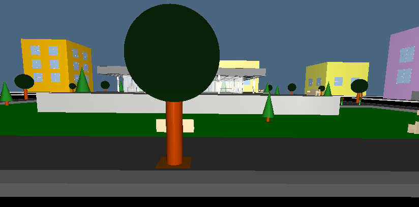

Exercise 1:
I reused the 2D horizontal partitioning of exercise 1 in homework 1 adding volume, where necessary, to the planes. This produced a 3D model of the horizontal partitions of the building. I took advantage of the reiteration to detail the model with a grid on the floor in order to design tiles on it.
Exercise 2:
As well as in exercise 1 I have reused volumed vertical partitioning by homework 1 (as the building only owns vertical enclosures and none of inner walls) and assembled it with the partial 3D model previously produced. Though in the mean time I have improved the look of the enclosures adding transparency to the windows and, so doing, giving them a glassy look.
Exercise 3:
To reach the goal of step 3 I mounted again the building over a staired base (an expedient used in hw1-ex4 to introduce stairs somewhere in the model) and built the urban setting all around the now vantage building. I proceeded then adding roads, sidewalks and additional simple buildings (endowed with windows and doors) forming into the neighbourhood blocks.
Exercise 4 [optional]:
To respond the requests I managed to introduced trees, in the form of both sphere-haired and cone-haired trunks, benches and lamps in the urban scenary. All the urban fittings have been placed sometimes randomly (like the trees in the garden around the main building) and sometimes geometrically (like benches, lamps and trees at the sidewalks corners), but always trying to generate equilibrate, reasonable and pleasent surroundings.

All source codes are available below: